Blind comparison: builds with and without web-stylebook-mcp
Ten briefs, two builds each. One build had the MCP server attached, the other did not. Which side is which was drawn per brief from a fixed seed and is not shown here. Look at every pair first; the mapping is in ../key.json and the protocol is in the README. There are no scores. Judge each pair yourself.
Screenshots are full-page and cut at 4000 px. Click one to open it at full size.
1. SRE incident dashboard
A monitoring dashboard for the site reliability engineers of a company that runs a consumer payments app. The on-call engineer keeps it open all day and during live outages to see which services are degraded, the active incidents with severity, owner, and age, recent deploys, and the key metrics (error rate, latency, traffic) for each service. It has to answer whether anything is broken and what changed within seconds of looking at it.
Desktop, 1440 px wide

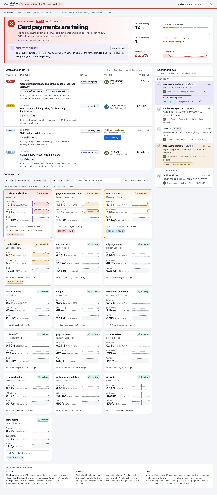

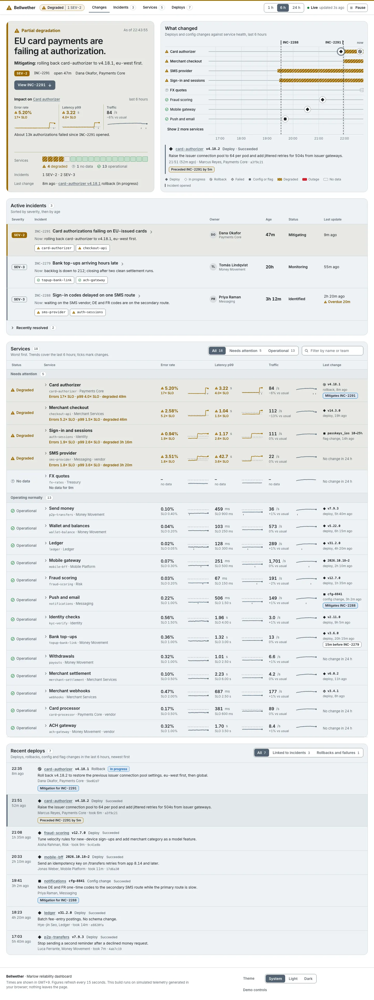
Mobile, 390 px wide

The page is 6183 px tall; the capture stops at 4000 px.

The page is 7798 px tall; the capture stops at 4000 px.
2. Indie long-form essay blog
An independent writer's blog that publishes one long-form essay every week or two on cities, technology, and everyday life. The home page introduces the writer, features the newest essay with an excerpt, lists earlier essays with dates, reading times, and topics, and invites readers to subscribe by email. Readers are people who follow the writer and read each essay in full.
Desktop, 1440 px wide

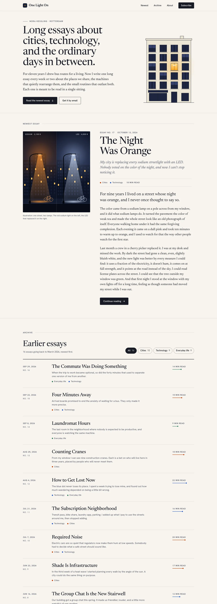
The page is 7145 px tall; the capture stops at 4000 px.

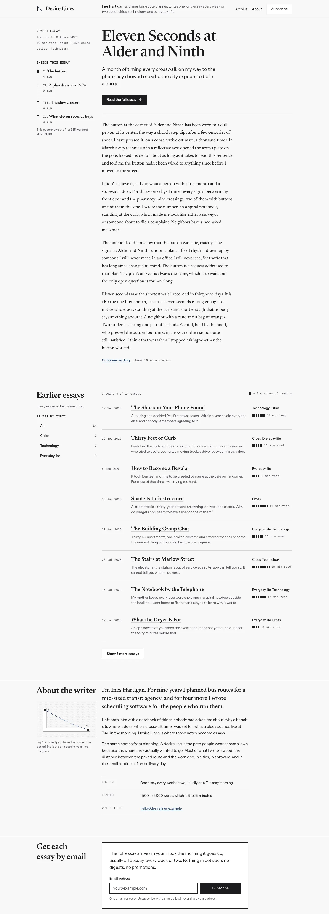
The page is 4285 px tall; the capture stops at 4000 px.
Mobile, 390 px wide

The page is 9807 px tall; the capture stops at 4000 px.

The page is 6718 px tall; the capture stops at 4000 px.
3. Luxury skincare product page
A product page for a night serum from a small-batch luxury skincare house, priced at about 240 dollars for 30 ml. The page presents the product, its key ingredients and where they are sourced, how to use it, results from a clinical study and customer reviews, and a purchase area with size options and delivery information. Shoppers are comparing it with other premium serums before they buy.
Desktop, 1440 px wide

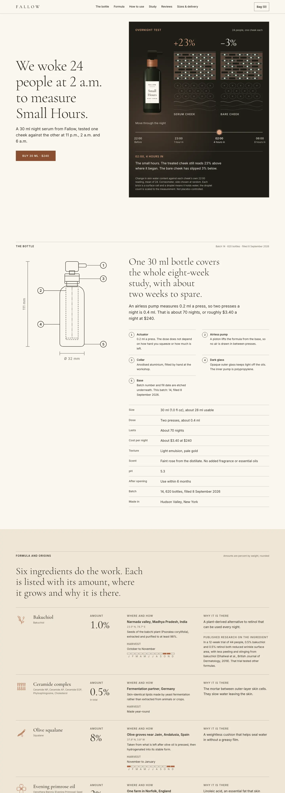
The page is 14289 px tall; the capture stops at 4000 px.

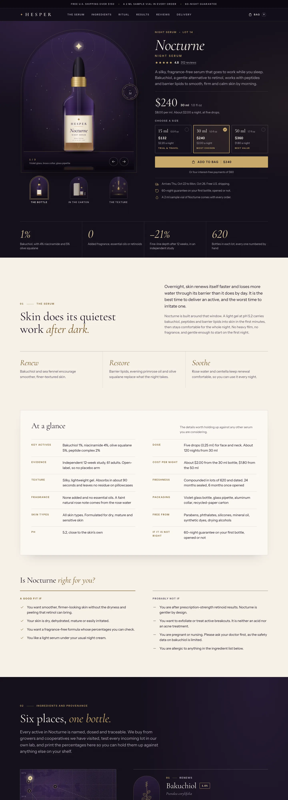
The page is 18649 px tall; the capture stops at 4000 px.
Mobile, 390 px wide

The page is 22812 px tall; the capture stops at 4000 px.

The page is 28657 px tall; the capture stops at 4000 px.
4. Kids coding-education landing page
A landing page for an online coding school for children aged 7 to 12. Parents decide whether to sign up, and the children also look at the page. It explains the courses by age group, how a live class works, the projects children build, monthly pricing, and a free trial class sign-up.
Desktop, 1440 px wide

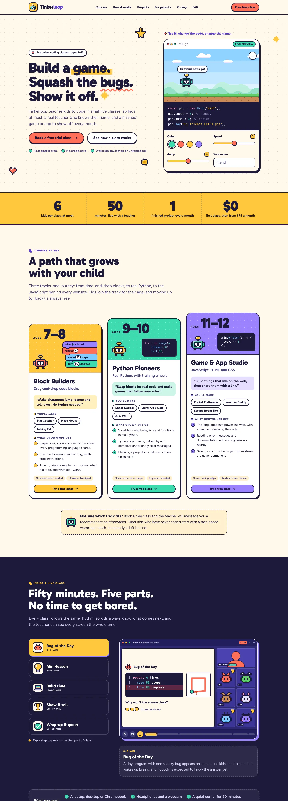
The page is 11781 px tall; the capture stops at 4000 px.

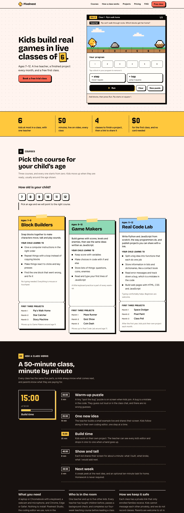
The page is 9770 px tall; the capture stops at 4000 px.
Mobile, 390 px wide

The page is 20340 px tall; the capture stops at 4000 px.

The page is 16976 px tall; the capture stops at 4000 px.
5. Developer API docs homepage
The documentation homepage for a payments API that software developers integrate into their products. It lets a developer find the right starting point quickly: a quickstart with a copyable code sample, guides by use case, the API reference, client libraries for several languages, and the changelog and system status. Developers visit it many times a day while they are in the middle of a task.
Desktop, 1440 px wide

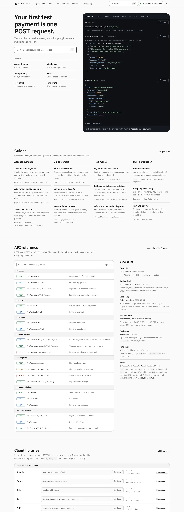
The page is 5818 px tall; the capture stops at 4000 px.

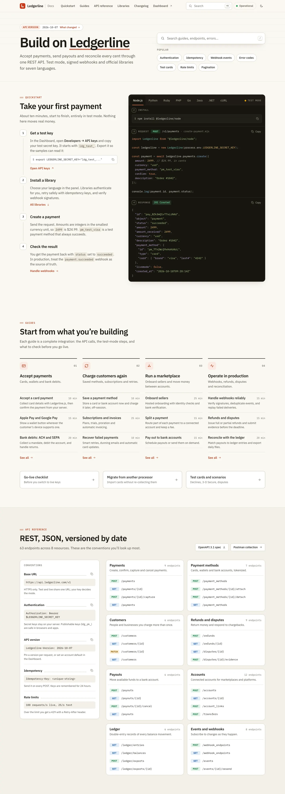
The page is 7445 px tall; the capture stops at 4000 px.
Mobile, 390 px wide

The page is 11386 px tall; the capture stops at 4000 px.

The page is 14286 px tall; the capture stops at 4000 px.
6. Personal budgeting app overview screen
The overview screen of a personal budgeting app for people with irregular income, such as freelancers. It shows this month's budget against spending by category, upcoming bills, progress toward savings goals, and recent transactions. People open it several times a week to check whether they are on track.
Desktop, 1440 px wide

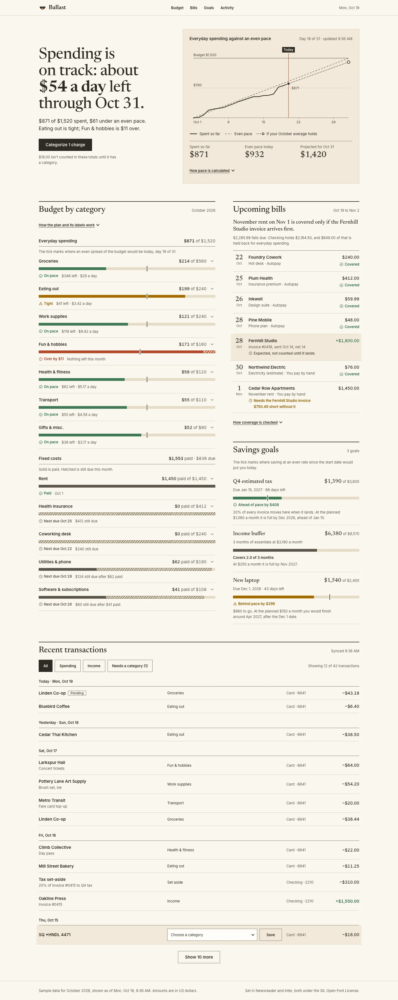

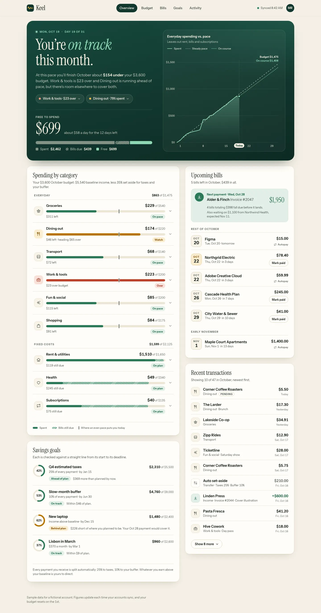
Mobile, 390 px wide

The page is 5969 px tall; the capture stops at 4000 px.

The page is 5192 px tall; the capture stops at 4000 px.
7. Architecture studio portfolio
The portfolio website of a small architecture studio that designs houses, cultural buildings, and public spaces. It presents the studio's approach, a selection of six recent projects with location, year, and building type, a short team section, and contact details. Visitors are prospective clients, journalists, and people who might want to work there.
Desktop, 1440 px wide

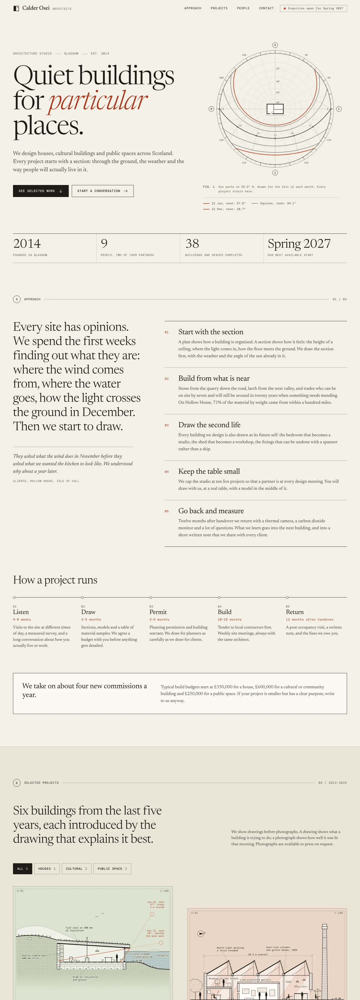
The page is 9319 px tall; the capture stops at 4000 px.

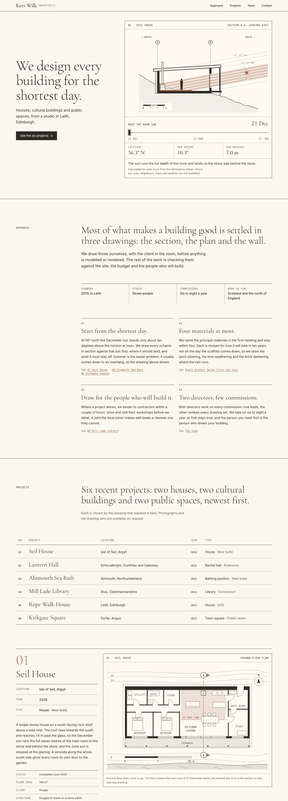
The page is 12113 px tall; the capture stops at 4000 px.
Mobile, 390 px wide

The page is 14484 px tall; the capture stops at 4000 px.

The page is 15844 px tall; the capture stops at 4000 px.
8. Neighborhood bakery ordering site
An online ordering site for a neighborhood bakery that sells bread, pastries, and celebration cakes. Customers browse the menu by category, add items to a basket, choose a pickup day and time slot, and can see opening hours and the shop's address. Some items must be ordered a day or more ahead.
Desktop, 1440 px wide

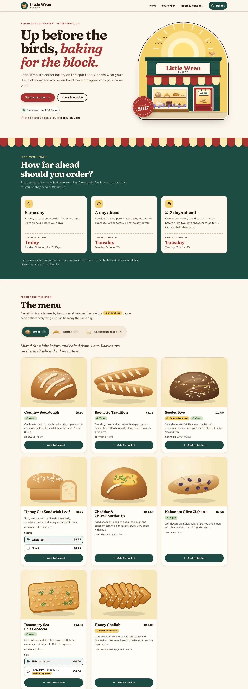
The page is 7153 px tall; the capture stops at 4000 px.

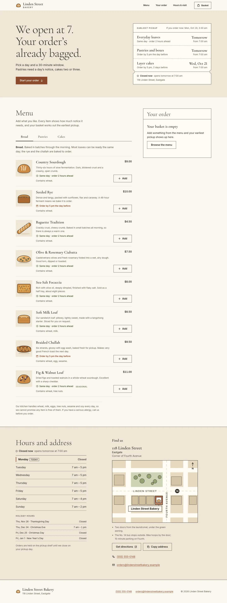
Mobile, 390 px wide

The page is 10543 px tall; the capture stops at 4000 px.

The page is 6072 px tall; the capture stops at 4000 px.
9. B2B HR SaaS landing page
A landing page for a B2B human resources platform that covers onboarding, time off, payroll sync, and performance reviews for companies with 50 to 500 employees. It is aimed at HR directors and operations leads who compare several vendors. The page needs to explain the product, show proof such as customer logos and results, list integrations and plans, and get visitors to book a demo.
Desktop, 1440 px wide

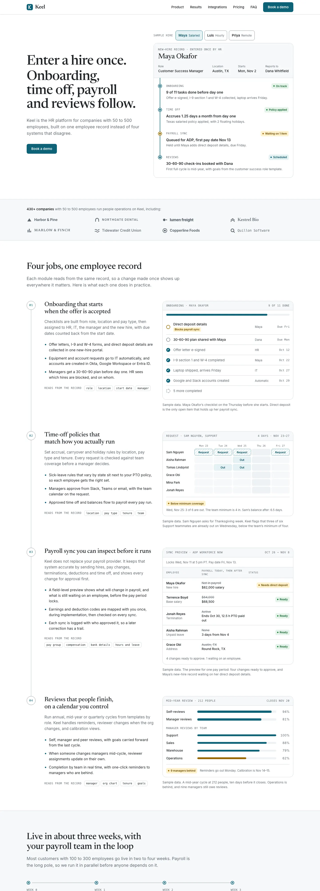
The page is 10769 px tall; the capture stops at 4000 px.

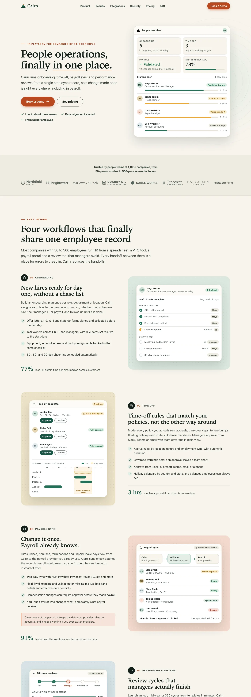
The page is 13187 px tall; the capture stops at 4000 px.
Mobile, 390 px wide

The page is 19247 px tall; the capture stops at 4000 px.

The page is 23641 px tall; the capture stops at 4000 px.
10. Music festival event page
The event page for a three-day outdoor music festival in late summer, with about forty artists on three stages. It announces the dates and location, the lineup by day, ticket tiers with prices, how to get there and where to stay, and answers to common questions. The main goal is to sell tickets before they run out.
Desktop, 1440 px wide

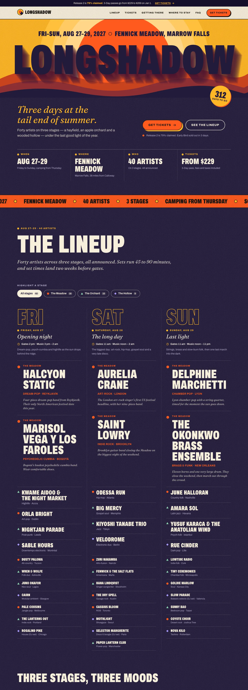
The page is 15038 px tall; the capture stops at 4000 px.

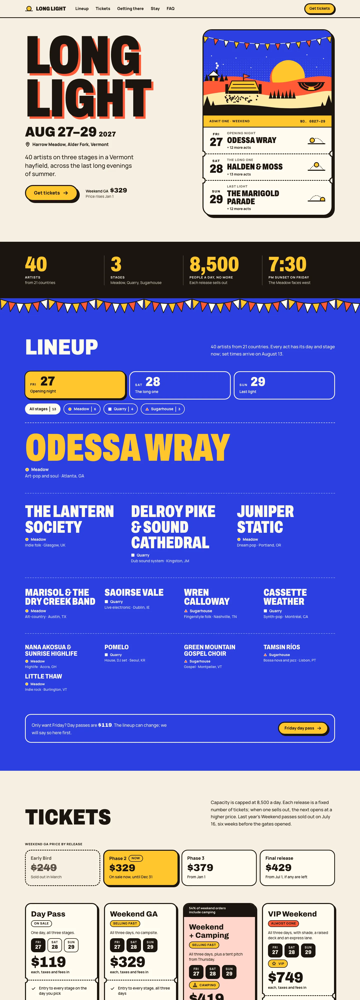
The page is 11105 px tall; the capture stops at 4000 px.
Mobile, 390 px wide

The page is 25280 px tall; the capture stops at 4000 px.

The page is 18071 px tall; the capture stops at 4000 px.